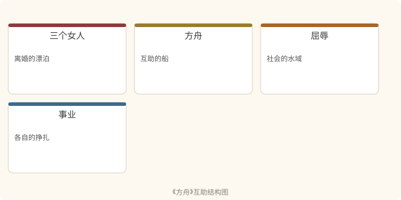

方舟
一、基本信息
| 作者 | 张洁 |
|---|---|
| 成书/出版 | 发表年份待核（新华网 C024：正文所列代表作包括'《沉重的翅膀》《方舟》《祖母绿》《只有一个太阳》《知在》《灵魂是用来流浪的》等'） 北京作协悼念张洁：爱，是不能忘记的（新华网）（官方媒体） |
| 国别/地区 | 中国 |
| 时代 | 现当代 · 当代 |
| 体裁 | 中篇小说 |
| 语言 | 汉语（白话） |

《方舟》互助结构图（主题·结构图）
二、创作背景
新华网（C024）：正文所列张洁代表作包括'《方舟》'。
题材（通说待核）：三个离婚女性（曹荆华、柳泉、梁倩）的'方舟'——女性互助的漂泊。
三、内容脉络
三位离婚女性的事业与屈辱——'做女人难'（通说待核）。
四、主要人物表
| 人物 | 身份 | 说明 |
|---|---|---|
| 曹荆华 | 导演 | （通说待核） |
| 柳泉/梁倩 | 伙伴 | （通说待核） |
五、主题与艺术特点
- 女性互助的'方舟'（书名通说）。
- 离婚女性的社会处境（通说）。
- 张洁女性书写的锋利面（通说）。
六、影响与评论
- 新华网：列入张洁代表作（C024）。
北京作协悼念张洁：爱，是不能忘记的（新华网）（官方媒体） - 作者页：张洁'唯一两度获茅奖'（C024 作者级）。
北京作协悼念张洁：爱，是不能忘记的（新华网）（官方媒体）
七、阅读建议
难点
- 女性处境的愤怒笔调。
- 1980年代语境。
- 《方舟》（收于张洁小说集，通说待核）。
先《爱，是不能忘记的》后本作。
八、待核实
- 首刊年份（《收获》1983年说）待核。
- 曹荆华/柳泉/梁倩人名核对。
- '方舟'题解待核。
本页主要来源
张洁的其他收录作品：无字